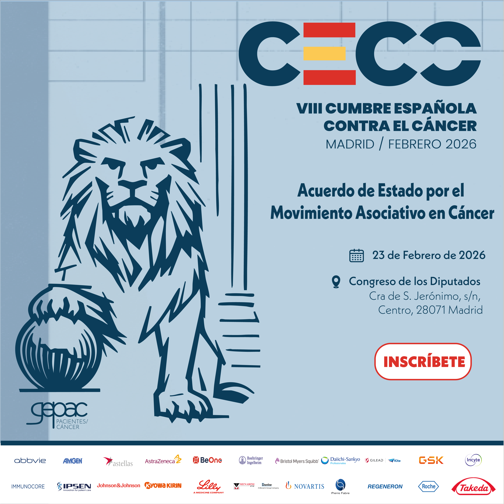

El Grupo Español de Pacientes con Cáncer (GEPAC) celebró el pasado 23 de febrero de 2025, en la Sala Ernest Lluch del Congreso de los Diputados, la VIII Cumbre Española contra el Cáncer, un encuentro institucional organizado con motivo del Día Mundial contr...
El Congreso de los Diputados acoge la VIII Cumbre Española contra el Cáncer El Grupo Español de Pacientes con Cáncer (GEPAC) celebró el pasado 23 de febrero de 2025, en la Sala Ernest Lluch del Congreso de los Diputados, la VIII Cumbre Española contra el Cáncer, un encuentro institucional organizado con motivo del Día Mundial contra el Cáncer. La jornada se consolidó como un espacio de diálogo y reflexión sobre el papel clave del movimiento asociativo en el abordaje del cáncer y en la mejora de la atención a las personas afectadas. A lo largo del encuentro, se reunieron pacientes, representantes institucionales, profesionales sanitarios, asociaciones de pacientes, sociedades científicas y grupos parlamentarios para analizar los principales retos del sistema sanitario y avanzar hacia una atención oncológica más equitativa, coordinada y centrada en las personas
El papel esencial del movimiento asociativo y la colaboración institucional La apertura institucional corrió a cargo de Don Agustín Santos Maraver, presidente de la Comisión de Sanidad en el Senado, y Doña Begoña Barragán García, presidenta de GEPAC. Durante la primera mesa de debate, se abordó el impacto del movimiento asociativo en pacientes y familiares, poniendo en valor su labor de acompañamiento emocional, social y práctico, así como su contribución a la información, orientación y apoyo integral, destacando su papel clave en la humanización del sistema sanitario. En la segunda mesa se analizó la colaboración entre instituciones y asociaciones de pacientes, subrayando la necesidad de avanzar hacia modelos de cooperación estables y de reforzar la participación activa de los pacientes en el diseño de las políticas públicas de salud como elemento esencial para una atención más justa y coordinada
Presentación del “Acuerdo de Estado por el Movimiento Asociativo en Cáncer” Uno de los momentos centrales de la jornada fue la presentación del “Acuerdo de Estado por el Movimiento Asociativo en Cáncer”, un documento de consenso impulsado por GEPAC que apuesta por reforzar la participación estructural de las asociaciones de pacientes en las políticas públicas de salud y en los procesos de toma de decisiones. El acuerdo sienta las bases para una colaboración estable y sostenida entre el movimiento asociativo, las instituciones y el sistema sanitario, reconociendo el valor de la experiencia del paciente como elemento clave para mejorar la atención oncológica en España
Clausura institucional y compromiso con la participación del paciente La clausura del acto corrió a cargo de la ministra de Sanidad, Doña Mónica García Gómez, quien destacó la importancia de avanzar hacia una respuesta más estable y coordinada frente al cáncer, poniendo el foco en el papel fundamental de las asociaciones de pacientes para detectar necesidades y carencias que el sistema puede pasar por alto. Durante su intervención, subrayó la relevancia de integrar de forma estructural la voz de los pacientes en las instituciones y en el diseño de las políticas públicas, reforzando así un modelo de atención participativo y centrado en las personas
Firma editorial Contenido elaborado por GEPAC · VIII Cumbre Española contra el Cáncer https://www.gepac.es/
